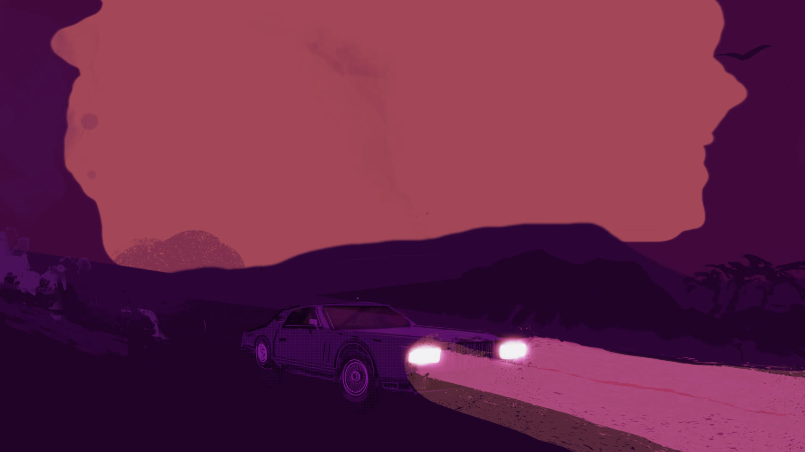
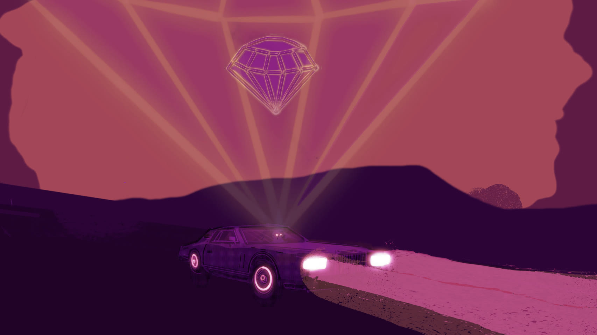
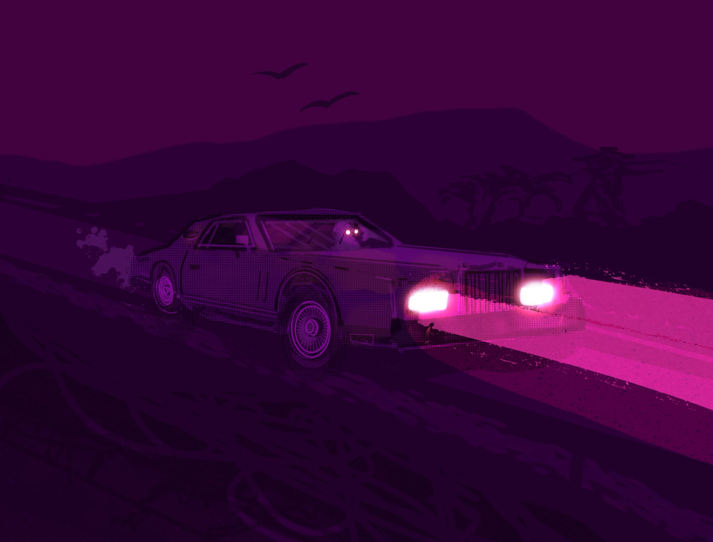
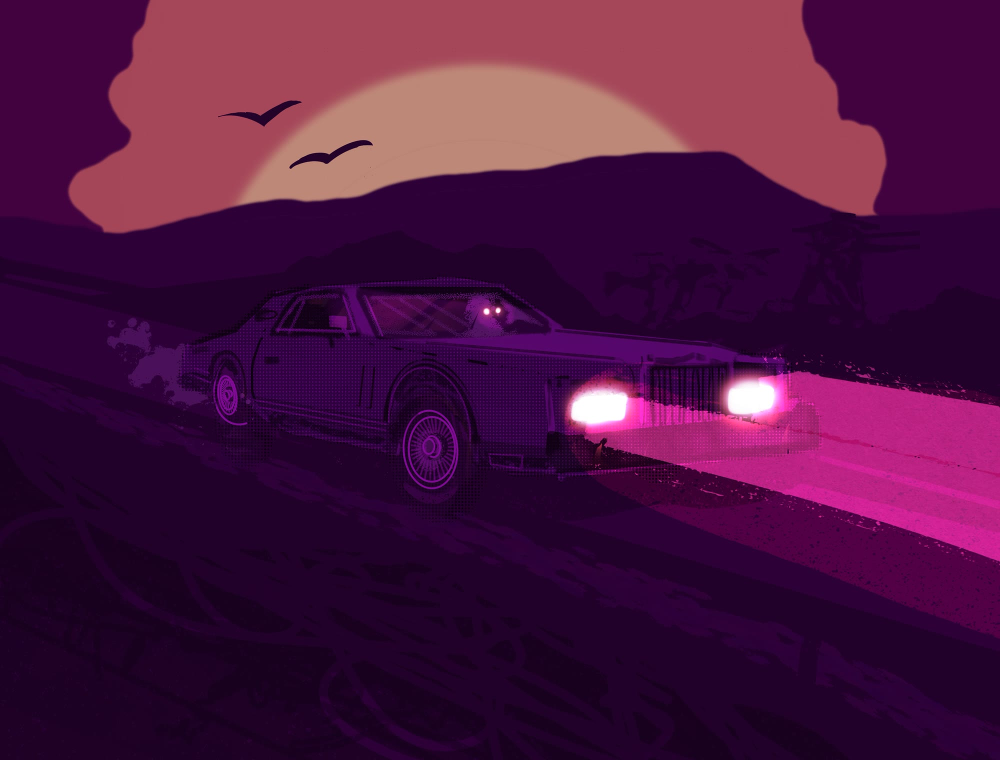
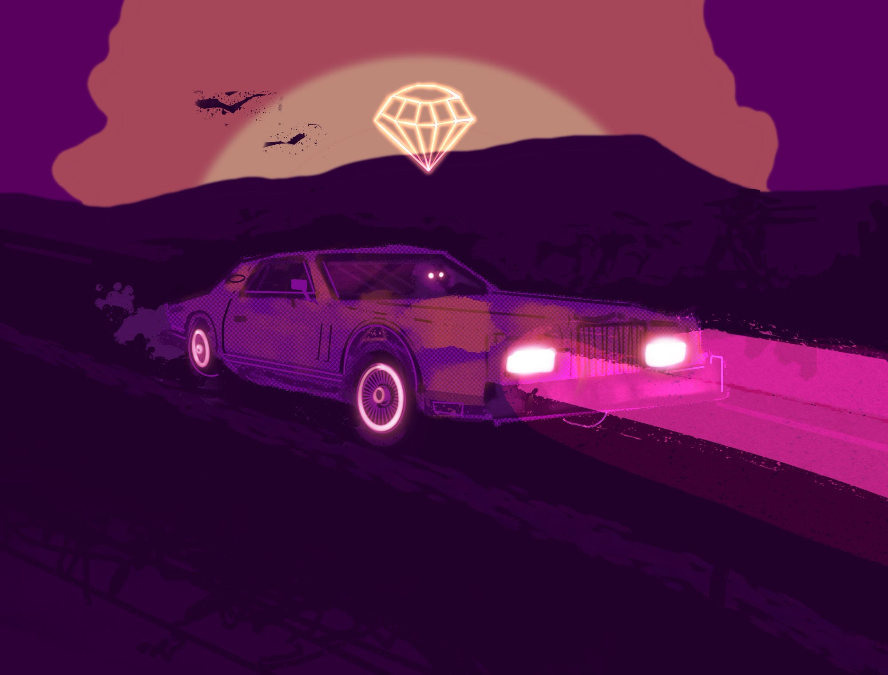
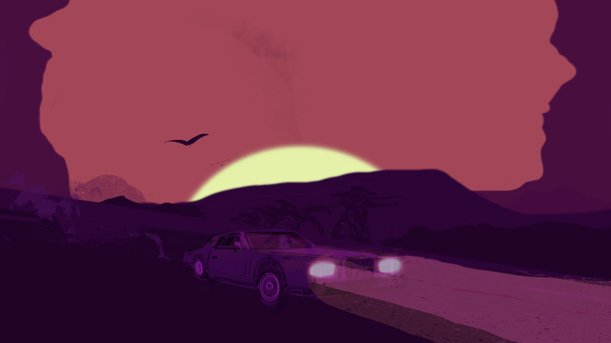
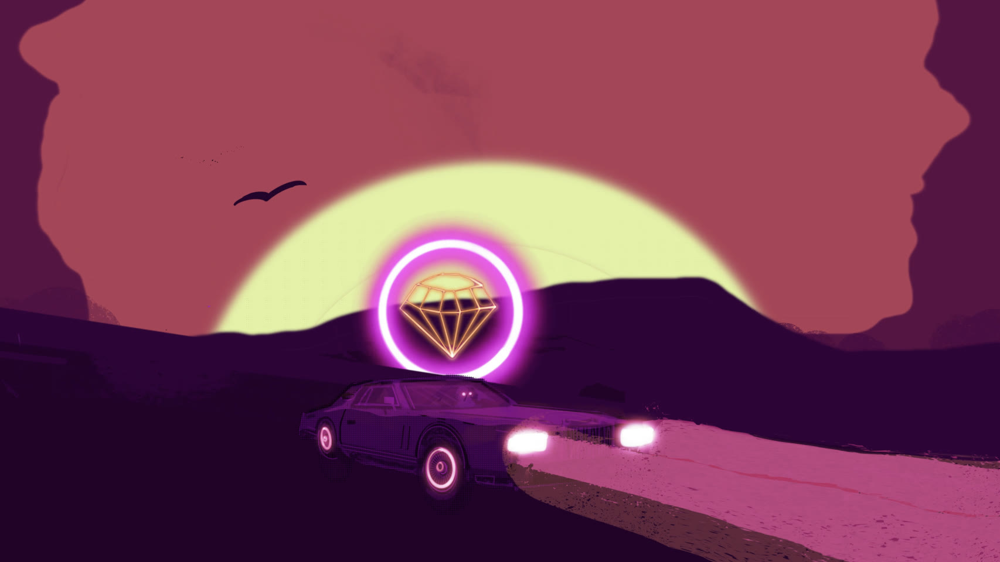

a long car, a longer road, and a sun that will not set
An animated music video for Great Vacation’s Yellow Gold Diamond Fire, drawn frame by frame: one car, one stretch of desert highway, and a sunset that keeps changing its mind about what colour it is.

The song arrived before any of the picture did. It has a particular kind of forward motion to it, the sort that suggests a vehicle and a horizon without ever naming either, and the first thing I drew was the road.
Everything after that was working out what the road was for.

One location, one camera position, and a palette that does all of the work. The frame barely moves across the whole piece. What changes is the light, and once the light is the only variable, every shift in it has to carry meaning.
The halftone screen over everything is the other rule. It sits between the flat colour and the viewer and keeps the whole thing feeling printed rather than rendered, which is the difference between this looking drawn and this looking generated.



One camera position · three points in the sun’s arc
Two minutes and nineteen seconds of a job that took considerably longer. Start to finish, at speed.
All of it. Concept, design, illustration, animation, and the cutting. There was no crew and no storyboard round, which is the advantage of a project small enough to hold in one head and the risk of one too.


A second pass composed for a phone held upright, rather than the wide frame with its ends cut off.
It is the piece that moved the drawing off the page. Everything else in the portfolio holds still, and this one had to keep working for the length of a song.
It also settled a question I had been avoiding, which is whether the illustration style survives being animated. It does, but only if the animation is drawn in the same hand, and that is the expensive answer rather than the easy one.